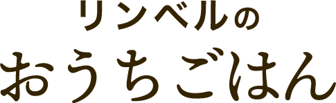
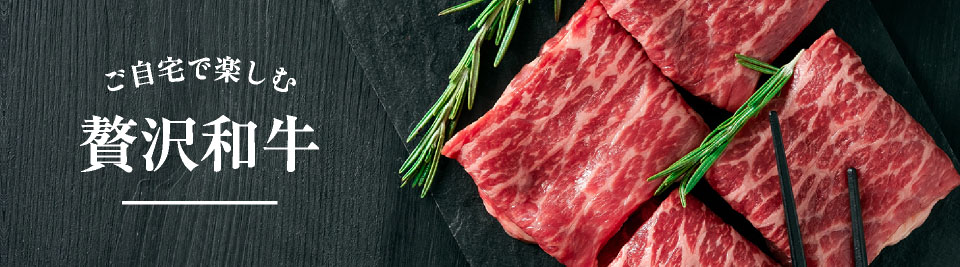
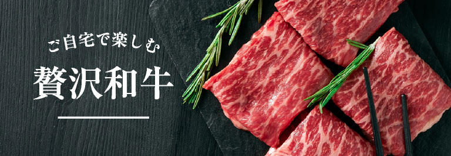
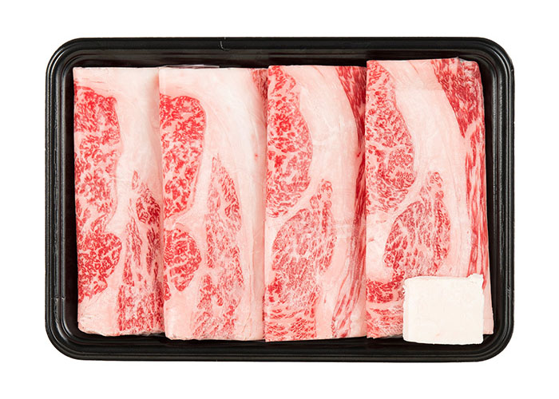
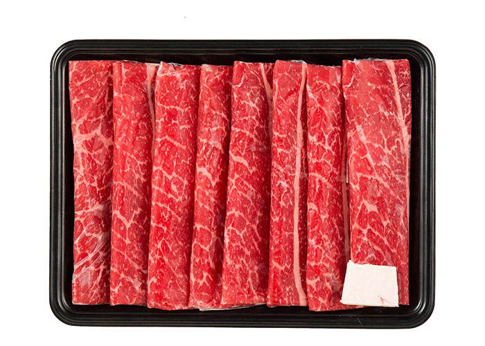
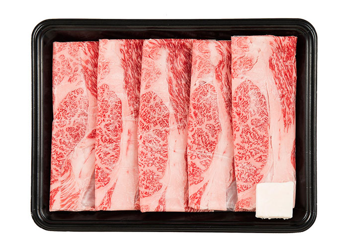
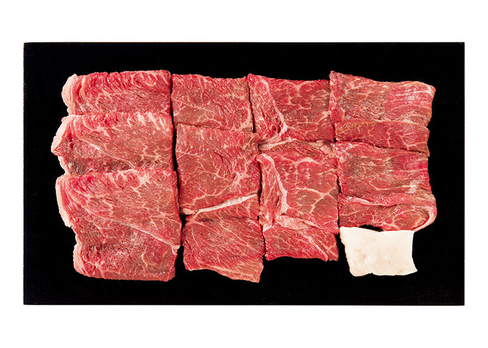
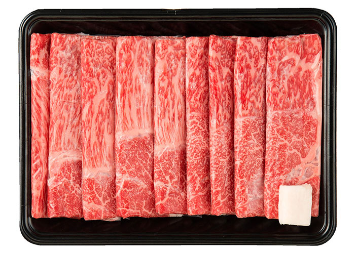
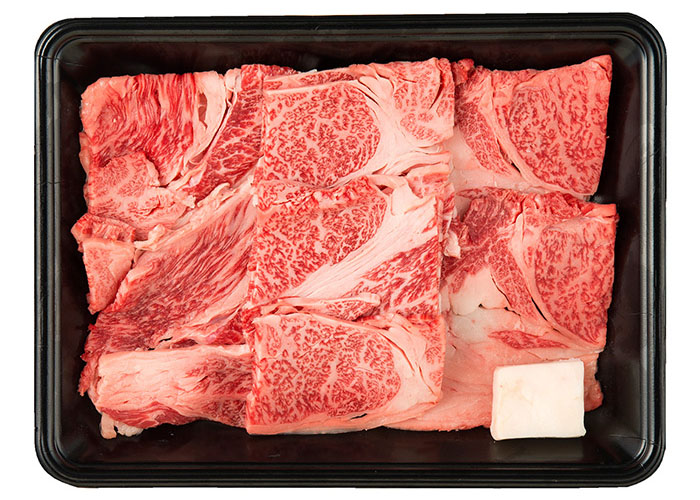
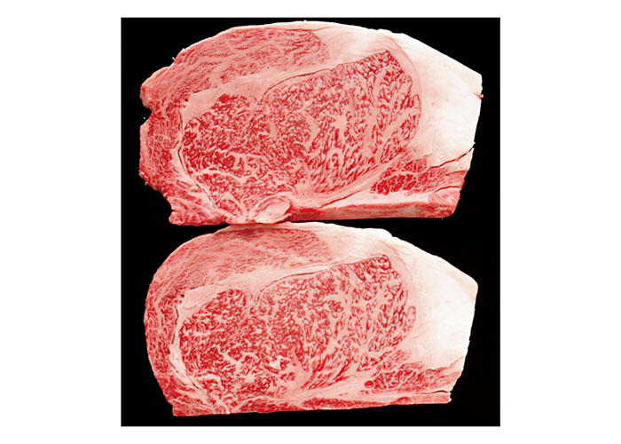

米沢牛
米沢・置賜盆地の寒暖差のある気候風土と最上川源流域の豊かな水資源に恵まれて育てられた米沢牛。良質な身の締まりと脂肪ののりの良さが特徴です。
-

-

-

-

-

-

-

山形牛
明治初期に山形県米沢市に招聘された英国人教師が、そのおいしさに驚嘆したという米沢牛が山形牛のルーツです。昭和37年、当時の県知事により山形県内産肉牛は「山形牛」と命名され全国にその名を広めていきました。良質な脂と肉質、まろやかで深い味わいをご堪能ください。
宮崎牛
宮崎県内で生まれ飼育された黒毛和種であること、肉質等級が4等級以上であること、この2つの厳しい基準をクリアしたものが宮崎牛です。その肉質の特徴は、霜降りの良さと締りの良い赤身で、滑らかな舌触りで口の中でさっぱりと溶け出す味わいをご堪能ください。
近江牛
日本3大和牛のひとつ「近江牛」は、約400年の歴史があるブランド和牛です。肉質はきめ細かくやわらかで、甘み、香りが溢れる脂は甘く、口の中でとろける美味しさがあります。
地域ブランド牛
前沢牛、仙台牛、熊野牛、鳥取和牛、佐賀牛、熊本あか牛、全国各地のブランド牛を取り揃えました。
その他和牛
黒毛和牛をお得に楽しめるラインナップを揃えました。